Snap Flow Builder¶
The Snap Builder generates a dungeon by stitching together pre-built rooms. These rooms are designed in individual level maps. The rules for stitching them is controlled by Graph Grammars
In this page, we’ll walk through the creation process.
Prepare the dungeon actor¶
Create a new scene and drop in a Dungeon Actor
Select the Snap Map builder

Note
Make sure it is SnapMap and not Snap builder
We’ll need to fill this later on
Create a Module Database¶
Create a new module database in the Content Browser
Double click to open it. This is the editor for the module database. Here is where we’ll register our module level files when we create them.
Close this editor window
Creating Module Level File¶
A module is a pre-designed room. You design a module in separate level files and you specify connection points (usually doors) that should be used for stitching the doors together.
Right click on the content browser and create a new level file (Right click so the new level file is empty as we don’t want the skybox, lights etc)

These level files are empty and don’t have any lights. It order to make it easier to design our rooms in these levels, We’ll create a new level (temporary) and edit our module level files from there
Create a new level from File > New Level and choose the default one

Open Levels window
In the Levels window, drag drop our module level and double click on it to make sure it is the currently selected level. If the level is currently selected, all dropped actors will be placed on it
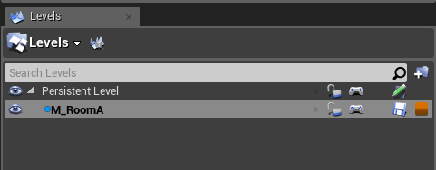Designing your Modules¶
Drag drop and design your module. Dungeon Architect comes with a rapid prototyping toolset that makes it easy to quickly build your rooms. We will use this in the sample, however feel free to use your own assets

Make sure the scale and movement is snapped to something like 1 and 100 respectively. This makes the adjustment easier

Complete the design of your room. We’ve left holes where there could be a possible entry / exit. Here, we will place a connection actor to let Dungeon Architect know that it can stitch other modules from this location.

Make sure all your meshes are inside the module level and not the temporary level we created. Do this by clicking the eye icon on the Levels window and make sure everything dissapears if we hide the module level
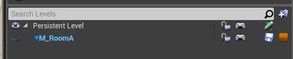Go ahead and design another module for our corridor.
Note
Make sure you are editing the correct level file by double clicking on the level name in the Levels window (it should turn bold)
Connections¶
A Snap Connection tells DA how to stitch the room modules together. They are usually the Door Entry / Exits. First create a Connection asset and specify the art asset to use for doors and walls.
If DA stitches another module through that connection point, it would place the specified Door mesh (or blueprint). Otherwise it would fill up the gap with the specified Wall mesh (or blueprint)
Right click on the content browser and create a connection asset
Double click and open up the editor. Here you specify the mesh or blueprint to use for the Door and Wall.
Your wall mesh thickness should be the same as the wall thickness you used while designing the module. (we used a thickness of 100 in the above sample)
Specify the proto cube mesh for the walls

Adjust the size so it is 400x100x400. Always make sure the red arrow points outwards and the wall mesh is behind it (because that is how we are going to align our connection actor later on)

We can specify the door blueprint as well but we’ll leave it empty in this example. When designing your door meshes, make sure the thickness is twice the thickness of the walls (since we account for the adjacent room as well and the thickness is aligned such that it is in the middle of the red arrow)
Close the connection editor window
Drag and drop the connection asset on the door opening
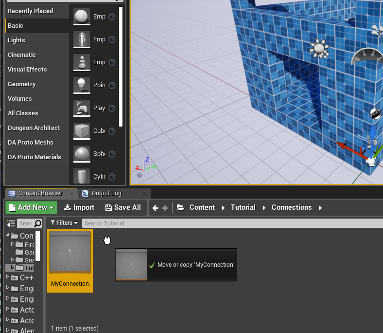Make sure the alignment arrow is pointing outwards and is on the edge of the screen
Note
It is a good practice to design with the snap settings in the editor enabled
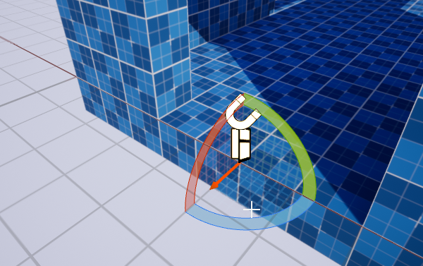
Repeat by drag-dropping on all the door openings. Do this for all the other modules as well (like the corridor module)

Register the Modules¶
It’s time to register our modules in the Module Database.
Open the module database editor


Click the Build Module Cache button after you’ve modified the module database. This is an optimization step so your dungeons build fast at runtime. You’ll get a warning on screen DA if detects that they are out of date

{% include important.html content=”Do not forget the above step. It is important” %}
Dungeon Flow¶
A Dungeon Flow graph allows you to control the layout of your dungeons using Graph Grammars. You can generate interesting graphs with simple rules
Create a new Dungeon Flow Asset
Add two new nodes Room and Corridor. You can change the name of the nodes from the details panel.
These names map to the names you specified on the Module database (Room and Corridor)

Select the Start Rule and on the RHS, drop in a few Room nodes like this:
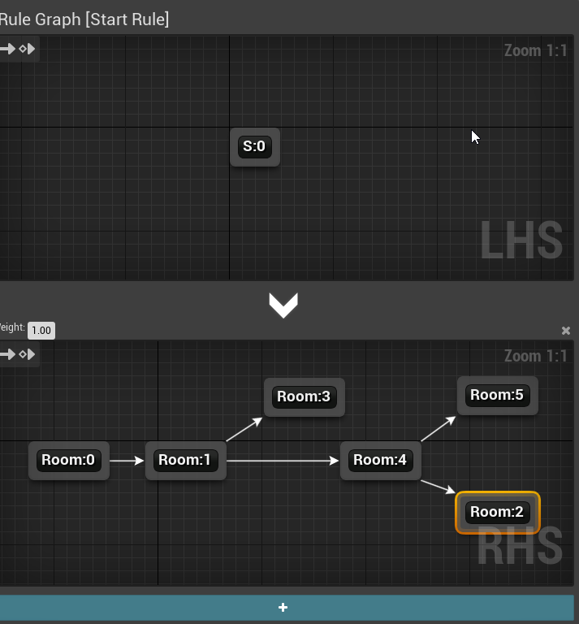Note
Cycles are not supported by the SnapMap builder
Execute the rule and see how the final graph is generated. You do this by clicking the Run icon on the Execution graph panel
 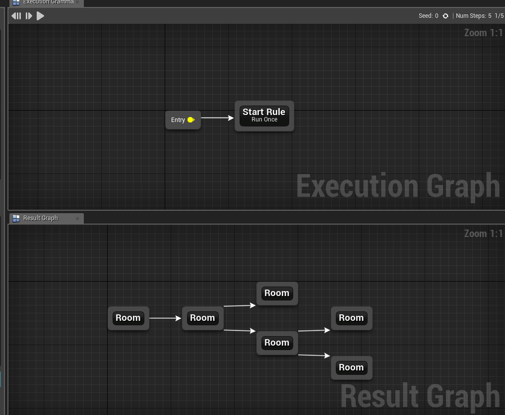
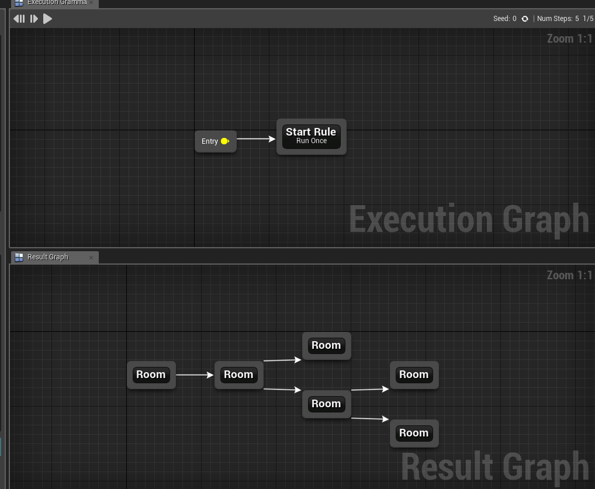
We’d like to insert Corridors between the rooms. Create another rule and give it a name (e.g. Insert Corridors)

On the LHS, we want to find a patterns where two rooms are connected to each other like this (Room -> Room) and have it replaced with (Room -> Corridor -> Room)
The Graph Grammar will find a pattern you specify on the LHS and replace it with the one you specify on the RHS
The Indices on the nodes (e.g. Room:0, Room:1) are important that helps in correct mapping. Since we properly specified 0 and 1 indices on the RHS, it knows the direction of the newly created links to the corridor. This will be covered in detail in the full documentation soon
You control how your rules are run from the Execution Graph. Drag drop your newly created Insert Corridor rule on to the execution graph and connect it after the Start Rule.

Select the newly placed node and from the details panel, change the execution mode to Iterate and set the count to 2 or 3 (This makes the rule run multiple times since the newly replaced Room nodes wont map with the adjacent older Room nodes by design and need to be run again)

Execute the grammar and you’ll now see corridors between your rooms

We will use this Dungeon Flow graph grammar to generate our snap dungeons
Generating the Dungeon¶
Assign the Module Database and Dungeon Flow Graph assets to the Dungeon Actor

Hit Build Dungeon. Click Randomize and try other configurations. Change the Dungeon Flow graph and experiment further

Enable Debug Draw for more visual info
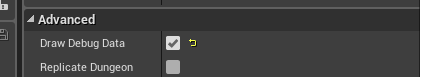Level Streaming¶
The snap builder fully supports Level Streaming. It would Stream In and Out module level files depending on the layout graph and customizable visiblity depth
Select the Dungeon Actor and enable level streaming
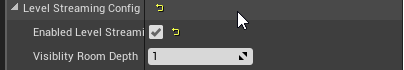Build a new Dungeon at runtime on BeginPlay of the Level’s blueprint
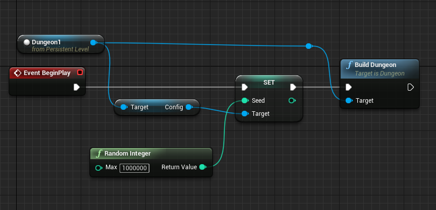Note
You can get the reference to the Dungeon1 node in the above blueprint by first selecting the dungeon in the level editor, then right click on the level blueprint
Destroy your existing dungeon. Hit play and the nearby modules will be streamed in / out as you move through dungeons. This helps with maintaining a smooth framerate with fully dynamic lighting

Negation Volumes¶
You can control where you dungeon grows by using Negation Volumes. This allow (or disallow) the grow of a dungeon at certain places. Use this to make sure your dungeon fits in a certain play area, or make sure it is not built in certain areas
Drop in a Dungeon Negation Volume actor on to the scene and scale it to the desired size
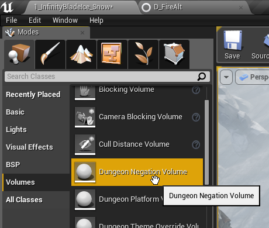Select the Negation Volume and inspect the properties. Assign the dungeon actor so this volume can work on that Dungeon
Hit build and the dungeon won’t build in that location
If the flag Reversed is checked in the properties, then the dungeon will be constrained within the volume bounds

Check the samples in the Launch Pad window

Sample Game¶
Explore the sample game which contains many more advanced features (minimaps, key / lock demo, NPCs, navigation etc)
Sample Game
MiniMap Demo
Multi-Level Dungeons